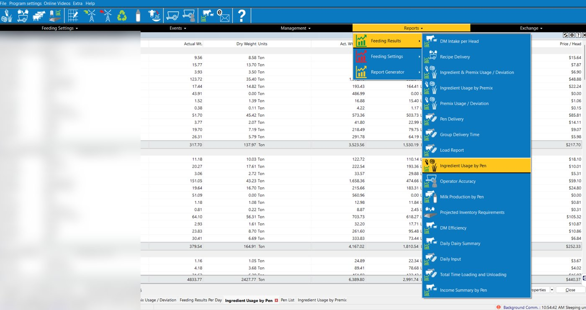
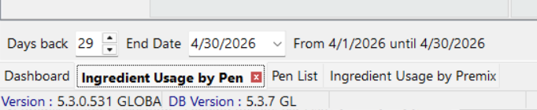

Drop your TapFeed Load report here
or click to choose it
Export the Load report from TapFeed for the full month as CSV. The older TMR Tracker monthly ingredient report (CSV or Excel) also works. Runs entirely on your computer — your feed data never leaves this page.
How to export the older TMR Tracker ingredient report


- In the bottom-right corner, set the template chooser to the Elanco template — this makes sure the correct columns are exported.
- Click Export and save the file as CSV or Excel.
We couldn't use that file
Saves to your Downloads folder, then upload it to UpLook yourself. Only Tons/Month is filled — UpLook takes one unit and your feed is in tons.
What will be uploaded
Tons of dry matter for the period, by feed code (report names aren't always reliable). Premixes are already broken out into the feeds inside them.
Show the working
Premixes broken out
What each premix is made of, scaled to the amount fed this period.
Totals before breakdown
Everything the cows ate, with each premix still counted as one line. Same total as the upload list.